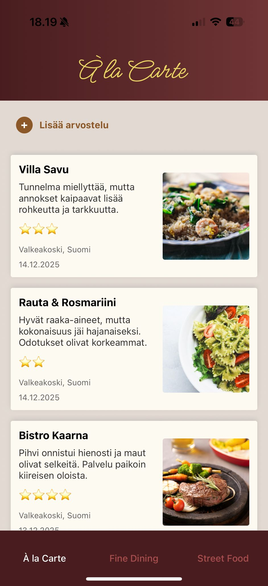
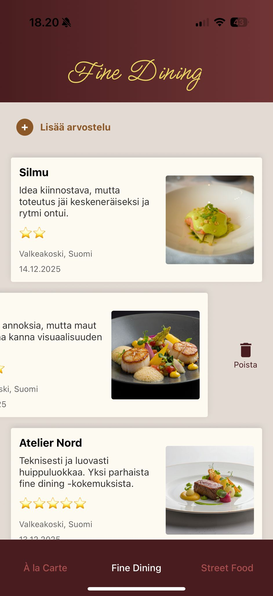
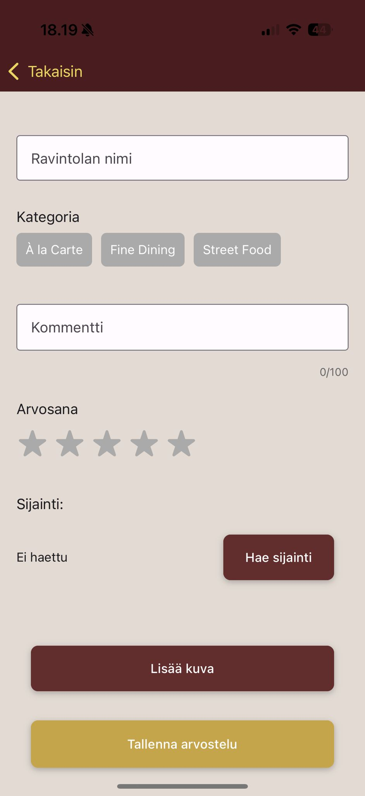
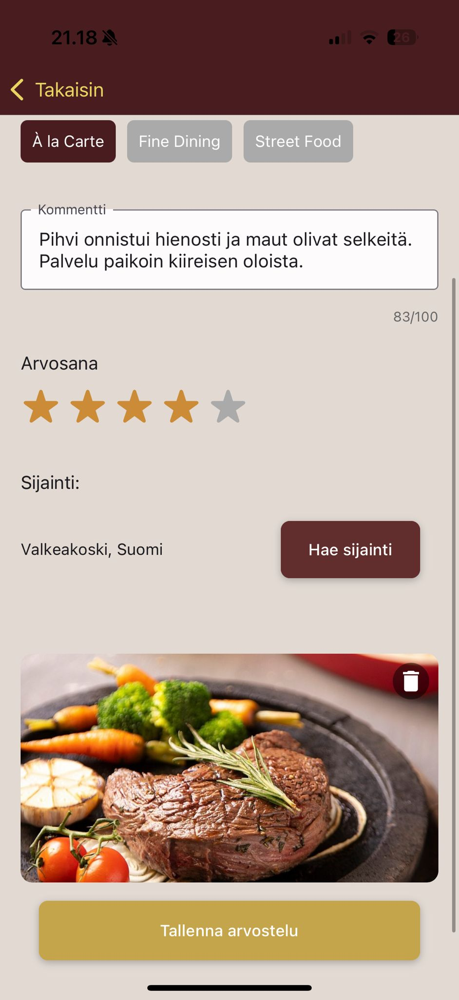

Ravintoloiden arvostelusovellus
Tässä projektissa toteutin React Nativella ravintoloiden arvostelusovelluksen mobiiliin, jonka avulla käyttäjä voi tallentaa ja hallinnoida ravintola-arvosteluja.
Projektin tavoitteena oli toteuttaa kokonaisuus, jossa yhdistyvät paikallinen tietokanta, mobiililaitteen ominaisuuksien hyödyntäminen sekä selkeä ja käyttäjäystävällinen käyttöliittymä. Käyttöliittymäsuunnittelussa käytin apuna Figmaa.
Sovellus hyödyntää SQLite-tietokantaa, johon arvostelut tallennetaan paikallisesti ilman erillistä palvelinta. Arvostelut luokitellaan kolmeen kategoriaan (À la Carte, Fine Dining ja Street Food), ja käyttöliittymä suodattaa tiedot dynaamisesti valitun kategorian perusteella.
Arvostelujen lisääminen on toteutettu erillisellä lomakenäkymällä, joka avataan React Navigationin Stack Navigatorin avulla. Lomakkeessa käyttäjä voi tallentaa ravintolan nimen, kommentin, tähtiarvosanan, sijainnin sekä kuvan. Pakolliset kentät validoidaan ennen tietojen tallentamista tietokantaan.


Kuvan voi ottaa valinnan mukaan kameralla tai valita kirjastosta.
Paikannuslupa ja kuva-/kamerankäyttölupa kysytään käyttäjältä näitä toimintoja käytettäessä. Nimi, kategoria ja arvosana ovat pakollisia täyttää, muut tiedot ovat valinnaisia. Tietojen puuttumisesta seuraa virheilmoitus.


Käytetyt teknologiat:
Pääset sovelluksen GitHub repositorioon tästä.
{kind=link}